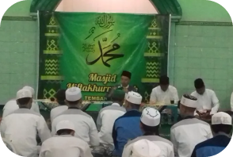
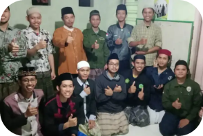
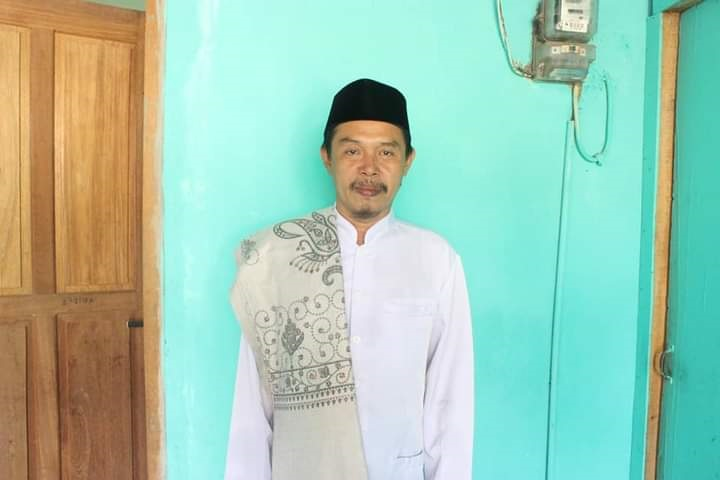

Pondok Pesantren Mahasiswa Anwarulamin dan Miftahurrohman
Pondok pesantren yang berpegang teguh kepada Al-Qur’an, Hadits, Ijma’, Qiyas dan para ulama ahlussunah wal jamaah.
Kegiatan
_
Mengaji

Selain menuntut ilmu di kampus, santri-santri juga wajib ngaji setiap hari. Pengajar adalah ulama Ahlussunah wal jamaah.
Mengkaji

Santri-santri dapat saling berdiskusi mengenai ilmu-ilmu yang telah dipelajari dan mengimplementasikannya ke dalam kehidupan sehari-hari.
Mengabdi
Santri-santri mengajar Taman Pendidikan Al-Qur’an Abajadun yang diasuh langsung oleh Kyai Abdillah Mathori, S.Pd, serta masih banyak kegiatan pengabdian kepada warga setempat lainnya.
Fasilitas
_
Pendidikan
Tempat Tinggal
Wifi
Listrik dan Air
Pengalaman Mengajar TPQ
Pondok Pesantren MahasiswaAnwarulamin dan Miftahulrohman
_
Pondok pesantren yang berpegang teguh pada Al-Qur’an, Hadits, Ijma’, Qiyas, dan para ulama Ahlussunah wal Jamaah. Dibawah asuhan dan bimbingan langsung oleh Kyai Abdillah Mathori, S.Pd.I. Santri disini terdiri dari santri putra dan santri putri yang merupakan mahasiswa di universitas yang ada di Semarang.

Pengasuh Ponpesma Kyai Abdillah Mathori, S.Pd
Alamat
Jalan K.H. Sirojuddin, Gg. Margoyoso, RT 03/03, Tembalang, Semarang, 50275 Jarak kurang dari 1 km dari kampus Tembalang UNDIP dan Polines